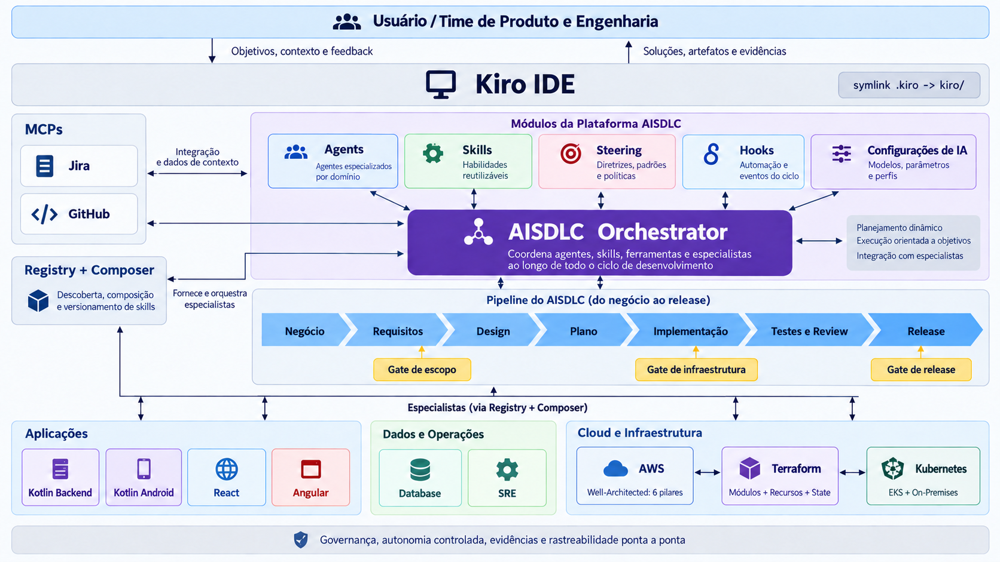

Experiência
O Kiro IDE e CLI fornecem chat, seleção de agentes, execução de specs, permissões e interação humana nos gates.
Guia completo da plataforma
Plataforma de agentes de IA para conduzir o ciclo completo de desenvolvimento de software no Kiro IDE, com requisitos, arquitetura, implementação, validação, revisão, documentação, release e governança rastreável.
O AISDLC é uma camada versionada de agentes, skills, steering, hooks, templates e ferramentas determinísticas sobre o runtime do Kiro. O estado do trabalho fica em arquivos auditáveis, e não na memória temporária de uma conversa.
O Kiro IDE e CLI fornecem chat, seleção de agentes, execução de specs, permissões e interação humana nos gates.
O sdlc-orchestrator conduz o fluxo e aciona papéis
especializados para refinamento, design, implementação e release.
Cada demanda vive em kiro/specs/<slug>/ com
brief, requisitos, design, tarefas, evidências e release.
Mudanças destrutivas, segredos, produção, migrações, contratos públicos e merges protegidos nunca são presumidos.
A plataforma não cria um serviço externo de workflow nesta fase. A coordenação acontece por composição de arquivos Kiro, comandos locais e integrações MCP explicitamente configuradas.

kiro/ como fonte de verdade
O diretório versionado kiro/ contém agentes,
skills, hooks, settings, specs e steering. O diretório
.kiro é apenas um link local para compatibilidade
com o Kiro.
Agentes produzem e consomem arquivos com contrato definido. Isso permite auditoria, retomada, revisão independente e troca de agentes sem perder histórico.
Autonomia é determinada por risco. Quanto maior a consequência da ação, mais explícito é o gate humano ou a política externa necessária.
O projeto não possui dependências npm além do Node.js. Os scripts usam APIs nativas e funcionam como validação e scaffolding da plataforma.
Baixe a plataforma e entre na raiz do projeto.
git clone https://github.com/mdnbras/aisdlc.git
cd aisdlc
O Kiro procura configurações em .kiro/. O AISDLC
versiona a fonte real em kiro/.
# Windows PowerShell
New-Item -ItemType SymbolicLink -Path .kiro -Target kiro
# Alternativa sem Developer Mode
New-Item -ItemType Junction -Path .kiro -Target kiro# Windows Command Prompt
mklink /D .kiro kiro
# Linux e macOS
ln -s kiro .kiroCopie o exemplo local e ajuste Jira e GitHub conforme as permissões do seu time.
cp kiro/settings/mcp.sample.json kiro/settings/mcp.jsonA validação confere estrutura obrigatória, frontmatter, hooks, settings, specs e regras de segurança.
npm run validate
Selecione o agente sdlc-orchestrator, inicie com
/run-sdlc ou crie uma spec nova por script.
npm run spec:new -- checkout-expresso "Checkout expresso"Uma demanda avança somente quando as saídas obrigatórias existem, os critérios de conclusão foram verificados e o gate aplicável foi resolvido.
business-brief.mdrequirements.mddesign.mdtasks.mdworkspace-changeevidence.mdreview-decisiondocs-changerelease.md
Cada entrega fica em kiro/specs/<slug>/. Os
arquivos funcionam como contrato entre agentes e como trilha de
auditoria para decisões, validação e release.
Use OBJ-001, REQ-001,
AC-001, DEC-001 e EVD-001
para ligar objetivos, requisitos, decisões, tarefas e evidências.
Os perfis ficam em kiro/agents/ e herdam o modelo
configurado no Kiro. As skills ficam em kiro/skills/
e aparecem como comandos para executar procedimentos específicos.
| Agente | Responsabilidade | Autonomia | Skill principal |
|---|---|---|---|
sdlc-orchestrator |
Conduz a demanda pelo fluxo completo e aplica gates. | 3 | /run-sdlc |
business-refiner |
Separa problema de solução e define objetivo mensurável. | 1 | /refine-business |
product-analyst |
Especifica requisitos, histórias e critérios de aceite. | 1 | /write-requirements |
solution-architect |
Define solução, interfaces, riscos e decisões. | 1 | /design-solution |
tech-lead |
Transforma o design em tarefas executáveis. | 2 | /plan-implementation |
implementation-agent |
Implementa tarefas aprovadas com testes. | 2 | /implement-task |
test-agent |
Valida comportamento e registra evidências. | 2 | /validate-change |
review-agent |
Revisa bugs, regressões, segurança e aderência. | 1 | /review-change |
documentation-agent |
Atualiza documentação técnica, operacional e de uso. | 2 | /document-feature |
release-agent |
Prepara release, deploy, smoke test e rollback. | 1 | /prepare-release |
kiro/steering/ contém produto, arquitetura,
engenharia, qualidade, entrega, autonomia, integrações e workflow.
kiro/hooks/quality-gates.json antecipa validações
estruturais e cobrança de evidências ao concluir tarefas.
templates/ instancia os arquivos padrão de uma spec
por meio do script npm run spec:new.
Especialistas são pacotes Kiro independentes, mantidos em
repositórios próprios, que são compostos no .kiro do
projeto alvo para atuar sobre a stack correta.
Detecte a stack, selecione um pacote, instale no workspace alvo, delegue ao subagente, valide, atualize ou remova quando necessário.
npm run specialist -- list
npm run specialist -- detect --target C:\MyPath\meu-servico
npm run specialist -- install ai-web-react --target C:\MyPath\meu-app-react
npm run specialist -- uninstall ai-web-react --target C:\MyPath\meu-app-reactai-kotlin-backendai-web-reactai-web-angularai-kotlin-androidai-databaseai-sreai-terraformai-awsai-kubernetesA plataforma combina níveis de autonomia com classificação de risco. O objetivo é permitir execução real sem apagar decisões humanas que exigem contexto de negócio, segurança ou operação.
| Risco | Exemplos | Gate mínimo |
|---|---|---|
| Baixo | Documentação, teste isolado, refatoração interna pequena. | Validação automática. |
| Médio | Comportamento de feature, dependência, API interna. | Plano e revisão. |
| Alto | Autenticação, dados pessoais, migração, contrato público, infraestrutura. | Aprovação humana antes da implementação. |
| Crítico | Produção, segredos, exclusão de dados, política de acesso, merge protegido. | Autorização explícita no momento da ação. |
O AISDLC declara Jira e GitHub como integrações iniciais de workspace. Leituras são usadas para contexto; escritas externas exigem alvo claro, gate resolvido, confirmação do Kiro e registro em evidência.
Usa endpoint https://mcp.atlassian.com/v2/mcp e
OAuth 2.1 no navegador. O escopo efetivo depende das permissões
do usuário e das políticas Atlassian.
Usa https://api.githubcopilot.com/mcp/ com token
em GITHUB_PERSONAL_ACCESS_TOKEN, toolsets
context, issues,
pull_requests e repos.
{
"mcpServers": {
"nome-do-servidor": {
"url": "https://endpoint-do-mcp",
"disabled": false,
"autoApprove": []
}
}
}# PowerShell
$env:GITHUB_PERSONAL_ACCESS_TOKEN = Read-Host "GitHub token"
kiro .
# Linux ou macOS
read -s GITHUB_PERSONAL_ACCESS_TOKEN
export GITHUB_PERSONAL_ACCESS_TOKEN
kiro .
Não escreva tokens em mcp.json, .env,
specs, logs ou evidências. Use variáveis de ambiente e prefira
personal access tokens de escopo mínimo.
Estes comandos cobrem o ciclo comum de manutenção da plataforma, criação de specs e composição de especialistas.
npm run validateUse após alterações em agentes, skills, hooks, specs, templates ou settings.
npm run spec:new -- minha-feature "Minha feature"Instancia artefatos a partir de templates/ e impede sobrescrita.
npm run specialist -- list
npm run specialist -- detect --target C:\repo\appLista pacotes e detecta stacks em um workspace consumidor.
Quando algo falhar, investigue primeiro instalação local, link
.kiro, configuração MCP, permissões e evidências.
.kiro aponta para kiro/.npm run validate para verificar estrutura.GITHUB_PERSONAL_ACCESS_TOKEN.